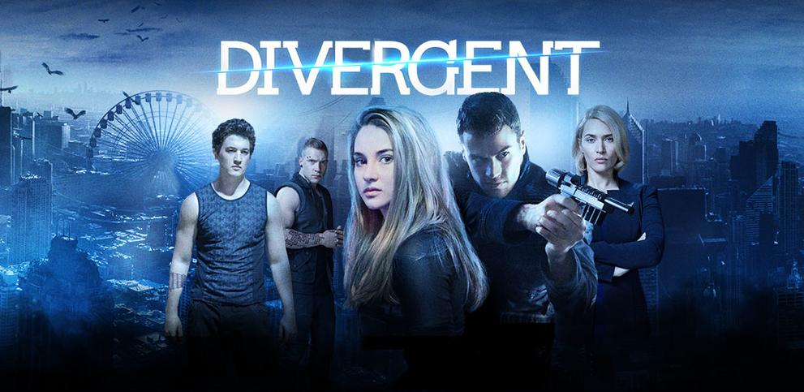

Plot summary
In the summer of 1922, Nick Carraway, a Yale graduate and veteran of the Great War from the Midwest—who serves as the novel's narrator—takes a job in New York as a bond salesman. He rents a small house on Long Island, in the fictional village of West Egg, next door to the lavish mansion of Jay Gatsby, a mysterious multi-millionaire who holds extravagant parties but does not participate in them. Nick drives around the bay to East Egg for dinner at the home of his cousin, Daisy Fay Buchanan, and her husband, Tom, a college acquaintance of Nick's. They introduce Nick to Jordan Baker, an attractive, cynical young golfer. She reveals to Nick that Tom has a mistress, Myrtle Wilson, who lives in the "valley of ashes,an industrial dumping ground between West Egg and New York City. Not long after this revelation, Nick travels to New York City with Tom and Myrtle to an apartment that Tom uses like a hotel room for Myrtle, as well as other women whom he also sleeps with. At Tom's New York apartment, a vulgar and bizarre party takes place. It ends with Tom physically abusing Myrtle, breaking her nose in the process, after she says Daisy's name several times, which makes him angry.Nick eventually receives an invitation to one of Gatsby's parties. Nick encounters Jordan Baker at the party and they meet Gatsby himself, an aloof and surprisingly young man who recognizes Nick because they were in the same division in the Great War. Through Jordan, Nick later learns that Gatsby knew Daisy through a purely chance meeting in 1917 when Daisy and her friends were doing volunteer service work with young officers headed to Europe. From their brief meetings and casual encounters at that time, Gatsby became (and still is) deeply in love with Daisy. Gatsby had hoped that his wild parties would attract an unsuspecting Daisy, who lived across the bay, to appear at his doorstep and allow him to present himself as a man of wealth and position.
Having developed a budding friendship with Nick, Gatsby uses him to arrange a reunion between himself and Daisy. Nick invites Daisy to have tea at his house without telling her that Gatsby will also be there. After an initially awkward reunion, Gatsby and Daisy begin an affair over the summer. At a luncheon at the Buchanans' house, Daisy speaks to Gatsby with such undisguised intimacy that Tom realizes she is in love with Gatsby. Though Tom is himself an adulterer, he is outraged by his wife's infidelity. He forces the group to drive into New York City and confronts Gatsby in a suite at the Plaza Hotel, asserting that he and Daisy have a history that Gatsby could never understand. In addition to that, he announces to his wife that Gatsby is a criminal whose fortune comes from bootlegging alcohol and other illegal activities. Daisy decides to stay with Tom, and Tom contemptuously sends her back to East Egg with Gatsby, attempting to prove that Gatsby cannot hurt her.
On the way back, Gatsby's car strikes and kills Tom's mistress, Myrtle. Nick later learns from Gatsby that Daisy, not Gatsby himself, was driving the car at the time of the accident. Myrtle's husband, George Wilson, falsely concludes that the driver of the yellow car is the secret lover he suspects his wife had. He learns that the yellow car is Gatsby's, fatally shoots him, and then turns the gun on himself. Nick organizes an unsettlingly small funeral for Gatsby which none of Gatsby's associates, only one of his partygoers and his estranged father Henry Gatz, attend. Later, Nick runs into Tom in New York and finds out that Tom told George that the yellow car was Gatsby's and gave him Gatsby's address. Disillusioned with the East, Nick moves back to the Midwest.
Fitzgerald's visits to Long Island's North Shore and his experience attending parties at mansions inspired The Great Gatsby's setting. Today, there are a number of theories as to which mansion was the inspiration for the book. One possibility is Land's End, a notable Gold Coast Mansion where Fitzgerald may have attended a party. Many of the events in Fitzgerald's early life are reflected throughout The Great Gatsby. Fitzgerald was a young man from Minnesota, and, like Nick, who went to Yale, he was educated at an Ivy League school, Princeton. Fitzgerald is also similar to Jay Gatsby in that he fell in love while stationed far from home in the military and fell into a life of decadence trying to prove himself to the girl he loved. Fitzgerald became a second lieutenant and was stationed at Camp Sheridan in Montgomery, Alabama. There he met and fell in love with a wild 17-year-old beauty named Zelda Sayre. Zelda finally agreed to marry him, but her preference for wealth, fun, and leisure led her to delay their wedding until he could prove a success. Like Nick in The Great Gatsby, Fitzgerald found this new lifestyle seductive and exciting, and, like Gatsby, he had always idolized the very rich. In many ways, The Great Gatsby represents Fitzgerald's attempt to confront his conflicted feelings about the Jazz Age. Like Gatsby, Fitzgerald was driven by his love for a woman who symbolized everything he wanted, even as she led him toward everything he despised.

DIVERGENT
Release date:March 18, 2014 (Los Angeles Premiere)
March 21, 2014 (United States)
Running time:140 minutes
Country:United States
Language:English
Budget: $85 million
Box office: $289 million
Genre:Fantastic(Melodramma)
Divergent is a 2014 American dystopian science fiction action film directed by Neil Burger, based on the 2011 novel of the same name by Veronica Roth. The film is the first installment in The Divergent Series and was produced by Lucy Fisher, Pouya Shabazian, and Douglas Wick, with a screenplay by Evan Daugherty and Vanessa Taylor. It stars Shailene Woodley, Theo James, Ashley Judd, Jai Courtney, Ray Stevenson, Zoë Kravitz, Miles Teller, Tony Goldwyn, Ansel Elgort, Maggie Q and Kate Winslet. The story takes place in a dystopian and post-apocalyptic Chicago where people are divided into distinct factions based on human virtues. Beatrice Prior is warned that she is Divergent and thus will never fit into any one of the factions. She soon learns that a sinister plot is brewing in the seemingly perfect society.Development of Divergent began in March 2011 when Summit Entertainment picked up the film rights to the novel with Douglas Wick and Lucy Fisher's production company Red Wagon Entertainment. Principal photography began April 16, 2013, and concluded on July 16, 2013, with reshoots taking place from January 24–26, 2014. Production mostly took place in Chicago.
Divergent was released on March 21, 2014, in the United States. The film received mixed reviews from critics, with praise going towards its concepts and action, and criticism focused on its execution. Reviewers found the film to be generic and unoriginal, comparing it unfavorably to other young adult fiction adaptations. Despite this, the film was a financial success as it reached the #1 spot at the box office during its opening weekend. After its release, the film earned over US$288 million worldwide against its budget of US$85 million. It was released on DVD and Blu-ray on August 5, 2014. In a futuristic dystopian Chicago, society is divided into five factions: Abnegation (the selfless), Amity (the peaceful), Candor (the honest), Dauntless (the brave) and Erudite (the intelligent). The remaining population are the Factionless. At the age of 16, they undergo a human serum albumin-induced psychological aptitude test which indicates their best-suited faction, though they are allowed to choose any faction as their permanent group at the subsequent Choosing Ceremony. Beatrice "Tris" Prior (Shailene Woodley) was born into Abnegation, which runs the government. Her father, Andrew Prior (Tony Goldwyn), serves on the ruling council along with the head of Abnegation, Marcus Eaton (Ray Stevenson). Beatrice takes her test with a Dauntless woman named Tori Wu (Maggie Q) as her proctor. Her results show the rare quality of equal attributes of multiple factions, meaning she is a Divergent. Her divergence includes Abnegation, Erudite, and Dauntless. Tori records her results as Abnegation and warns her to keep the true result a secret, saying that because Divergent can think independently the government cannot control them and they are considered threats to the existing social order.
The next day at the Choosing Ceremony, Beatrice's brother Caleb Prior (Ansel Elgort) chooses Erudite. After some indecision, Beatrice defects to Dauntless. These choices draw attention to Caleb and Beatrice as most Abnegation choose to stay in their faction. After the ceremony, Beatrice meets Christina (Zoë Kravitz), Al (Christian Madsen), and Will (Ben Lloyd-Hughes), three other initiates from other factions who also chose Dauntless. Christina and Al are from Candor, and Will is from Erudite. The initiates' commitment and fearlessness are immediately tested, and Eric Coulter (Jai Courtney), a brutal Dauntless leader, makes it clear that anyone not meeting Dauntless' high expectations will be expelled from the faction to become Factionless. Beatrice is the first to volunteer for a leap of faith from a tall building into a dark hole, landing in a net. When Four (Theo James), a transfer initiates' instructor, asks her name, she shortens it to "Tris" leaving her Abnegation childhood behind. Tris initially struggles in Dauntless training, ranking far below the cutoff after the first evaluation, but with Four's help slowly improves. Eric matches her against her nemesis;— Peter (Miles Teller) in a fight. Tris is soundly defeated and wakes up in the infirmary. Informed that she will miss the most important test, Capture The Flag, Tris leaves the infirmary and joins the other initiates, secures her team's victory, and makes the final cut. In the next phase of training, the initiates face their worst fears in psychological simulations. Divergent are resistant to serums and simulations, so Tris excels at these tests, solving them in peculiar ways, but Four warns her to solve the challenges as a normal Dauntless would in order to hide her abilities. Tris visits Caleb. She tells him that Erudite is planning to overthrow Abnegation and become the ruling faction. He doesn't believe her. On her return to Dauntless quarters, Tris is attacked by Al, Peter, and Drew before being rescued by Four. The next day Al pleads for Tris' forgiveness but she refuses, calling him a coward. He later kills himself by jumping into "The Chasm" rather than live with the shame. To prepare her for the final test, Four takes Tris into his own fear simulations, where she learns that he was Tobias Eaton, the son of Marcus Eaton (her father's colleague). After the simulation, they kiss. Tris then passes her test and is officially initiated into Dauntless. The Dauntless, including Tris and Four, are injected by Dauntless leadership with a serum supplied by Erudite which is supposedly for tracking, but is actually for mind control. The next morning, the Dauntless prepare to execute Abnegations by the orders of the Erudite and the Dauntless leadership working with them. Divergents are unaffected by the mind control serum. When the mind controlled Dauntless army are preparing for Abnegation execution, a confused Divergent reveals himself by asking everyone what is happening and is shot immediately by Eric. Witnessing this Tris blends in with the army to avoid suspicion. On the train, she carefully makes her way next to Four. She stands next to him and after a few seconds he reveals himself as a Divergent to Tris for the first time by holding her hand and she is relieved. While the Dauntless move to raid Abnegation, Tris and Four separate from the group and attempt to locate Tris' parents. Eric is suspicious of Four and tests him by pointing his gun at Four. Tris breaks their cover and points her gun at Eric. Their identities as Divergents are revealed to the Dauntless leaders and they both get captured. Four is taken into custody while Tris is ordered to be executed. Her mother Natalie (Ashley Judd) appears and liberates her. Tris now knows that her mother is also Divergent. She tells Tris her father's whereabouts and that they have to get back to them immediately. Tris kills one of her friends, Will, and is really affected by the fact that she had to kill her friend to survive. Unfortunately, her mother is soon shot dead as they flee. Tris has to leave her mother's dead body to save herself from being killed.
TWILIGHT
Directed by Catherine Hardwicke
Genre:Fantastic(Melodramma)
Release date:
November 17, 2008 (Los Angeles premiere)
November 21, 2008 (United States)
Running time:
121 minutes
126 minutes
Country United States
Language: English
Budget: $37 million
Box office: $393.6 million

Twilight is a 2008 American romantic fantasy film based on Stephenie Meyer's novel of the same name. Directed by Catherine Hardwicke, the film stars Kristen Stewart and Robert Pattinson. It is the first film in The Twilight Saga film series. This film focuses on the development of the relationship between Bella Swan (a teenage girl) and Edward Cullen (a vampire), and the subsequent efforts of Edward and his family to keep Bella safe from a coven of evil vampires. The project was in development for approximately three years at Paramount Pictures, during which time a screen adaptation that differed significantly from the novel was written. Summit Entertainment acquired the rights to the novel after three years of the project's stagnant development. Melissa Rosenberg wrote a new adaptation of the novel shortly before the 2007–2008 Writers Guild of America strike and sought to be faithful to the novel's storyline. Principal photography took 44 daysand was completed on May 2, 2008;the film was primarily shot in Oregon. Twilight was theatrically released on November 21, 2008; it grossed over US$393 million worldwide.It was released on DVD March 21, 2009 and became the most purchased DVD of the year. The soundtrack was released on November 4, 2008. Following the film's success, New Moon and Eclipse, the next two novels in the series, were produced as films the following year.
Plot Bella Swan, a seventeen-year-old outcast, moves to Forks, a small town located by Washington state's Olympic Peninsula, to live with her father, Charlie, who is the police chief of town. Her mother, Renée, is remarried to a minor league baseball player, and they travel often to attend games. At her new high school, Bella makes several new friends, but she is also intrigued by the mysterious and aloof Cullen siblings. Bella sits next to Edward Cullen in biology class on her first day of school, but he seems to be repulsed by her. After a week of absence from school, Edward returns to school and begins socializing with Bella normally. A few days later, Bella is nearly struck by a van in the school parking lot. Edward saves her by instantaneously covering a distance of over thirty feet, and putting himself between Bella and the van, stopping it with only his hand, and making a conspicuous dent on the van. He subsequently refuses to explain his actions to Bella, and warns her against befriending him. After much research, Bella concludes that Edward is seemingly human, but has mysterious powers resembling those of a vampire. He eventually confirms this, but says he and the other Cullens only consume animal blood. The pair fall in love, and Edward introduces Bella to his vampire family. Carlisle Cullen, the family patriarch, is a doctor working at the hospital in Forks. His wife is Esme, the family's matriarch. Alice, Jasper, Emmett, and Rosalie, are their informally adopted children. Edward and Bella's relationship is soon put in jeopardy when three nomadic vampires—James, Victoria, and Laurent—arrive in Forks. James, a tracker vampire with incredible hunting instincts, is instantly intrigued by Edward's protectiveness of a human, which incites him to hunt Bella for sport. Edward and the other Cullens put their lives on the line in an effort to protect Bella, but James tracks her to Phoenix, Arizona, where she is hiding with Jasper and Alice. James lures Bella into a trap by falsely claiming that he is holding her mother hostage. James attacks Bella by biting her wrist, infecting her with vampire venom. After a ferocious battle, Edward subdues James just as the other members of the Cullen family arrive. Alice, Emmett, and Jasper kill James, decapitating and burning him, as Edward removes the venom from Bella's wrist, preventing her from turning into a vampire. In the aftermath of the battle, Bella has suffered a broken leg, and ends up in the hospital, but her mother stops by to visit. Upon returning to Forks, Edward accompanies Bella to the high school prom, where he refuses to grant her request that he would transform her into a vampire. As the two go into the gazebo, they are unaware that James' mate, Victoria, is secretly watching, plotting revenge for her lover's death.
Release Box office: Twilight grossed over $7 million in ticket sales from midnight showings alone on November 21, 2008.The film is fifth overall on Fandango's list of top advance ticket sales, outranked only by its sequel the following year, Star Wars: Episode III – Revenge of the Sith (2005), The Dark Knight (2008), and Harry Potter and the Half-Blood Prince (2009). It grossed $35.7 million on its opening day. For its opening weekend in the United States and Canada, Twilight accumulated $69.6 million from 3,419 theaters at an average of $20,368 per theater.The film grossed $192,769,854 in the United States and Canada, and $199,846,771 in international territories for a total of $392,616,625.Its opening weekend gross was the highest ever of a female-directed film, surpassing that of Deep Impact (1998). Critical reception Twilight received mixed reviews from critics. Based on 210 reviews collected by Rotten Tomatoes, the film has a rating of 49%, with a weighted average score of 5.4/10. The website's critical consensus reads: "Having lost much of its bite transitioning to the big screen, Twilight will please its devoted fans, but do little for the uninitiated." On Metacritic, it has a weighted mean score of 56 based on 37 reviews from film critics, indicating "mixed or average reviews". New York Press critic Armond White called the film "a genuine pop classic", and praised Hardwicke for turning "Meyer's book series into a Brontë-esque vision."[78] Roger Ebert gave the film two-and-a-half stars out of four and wrote, "I saw it at a sneak preview. Last time I saw a movie in that same theater, the audience welcomed it as an opportunity to catch up on gossip, texting, and laughing at private jokes. This time the audience was rapt with attention". In his review for the Los Angeles Times, Kenneth Turan wrote, "Twilight is unabashedly a romance. All the story's inherent silliness aside, it is intent on conveying the magic of meeting that one special person you've been waiting for. Maybe it is possible to be 13 and female for a few hours after all". USA Today gave the film two out of four stars and Claudia Puig wrote, "Meyer is said to have been involved in the production of Twilight, but her novel was substantially more absorbing than the unintentionally funny and quickly forgettable film".Entertainment Weekly gave the film a "B" rating and Owen Gleiberman praised Hardwicke's direction: "She has reconjured Meyer's novel as a cloudburst mood piece filled with stormy skies, rippling hormones, and understated visual effects".